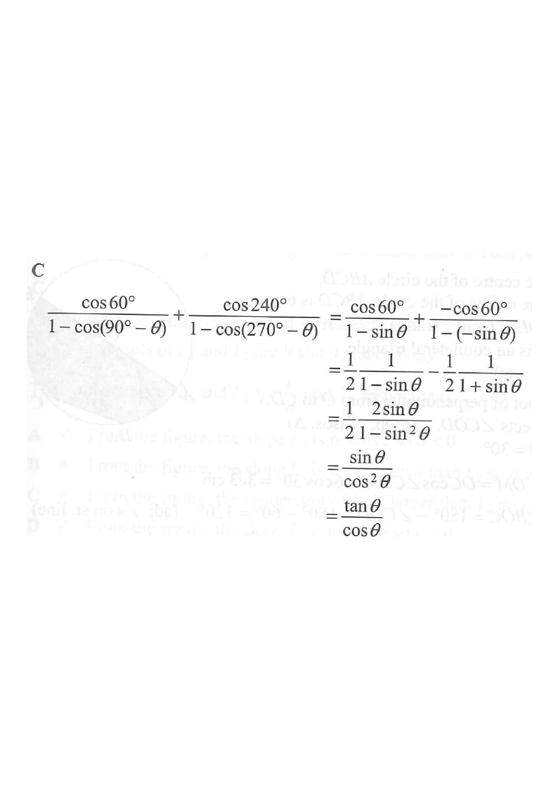

Question
$$\frac{\cos 60^\circ}{1-\cos(90^\circ-\theta)}+\frac{\cos 240^\circ}{1-\cos(270^\circ-\theta)}=$$

Work out the basic angles first. From the unit circle:
$$\cos 60^\circ = \tfrac{1}{2}, \qquad \cos 240^\circ = -\tfrac{1}{2}$$
So the expression becomes
$$\frac{\tfrac{1}{2}}{1-\cos(90^\circ-\theta)}+\frac{-\tfrac{1}{2}}{1-\cos(270^\circ-\theta)}$$
Use the identities relating $90^\circ$ and $270^\circ$:
$$\cos(90^\circ-\theta)=\sin\theta,\qquad \cos(270^\circ-\theta)=-\sin\theta$$
Substituting into the denominators:
$$1-\cos(90^\circ-\theta)=1-\sin\theta,\qquad 1-\cos(270^\circ-\theta)=1+\sin\theta$$
$$\frac{\tfrac{1}{2}}{1-\sin\theta}+\frac{-\tfrac{1}{2}}{1+\sin\theta}$$
Factor out $\tfrac{1}{2}$:
$$=\frac{1}{2}\left(\frac{1}{1-\sin\theta}-\frac{1}{1+\sin\theta}\right)$$
$$=\frac{1}{2}\cdot\frac{(1+\sin\theta)-(1-\sin\theta)}{(1-\sin\theta)(1+\sin\theta)}$$
$$=\frac{1}{2}\cdot\frac{2\sin\theta}{1-\sin^2\theta}=\frac{\sin\theta}{1-\sin^2\theta}$$
Since $1-\sin^2\theta=\cos^2\theta$:
$$=\frac{\sin\theta}{\cos^2\theta}=\frac{\sin\theta}{\cos\theta}\cdot\frac{1}{\cos\theta}=\frac{\tan\theta}{\cos\theta}$$
C. $\quad\dfrac{\tan\theta}{\cos\theta}$